Computer Graphics · Visual Computing Systems
I am a PhD candidate in Electrical and Computer Engineering at Carnegie Mellon University, advised by Anthony Rowe.
Previously, I did my undergrad in ECE at CMU and graduated in May 2022.
I am fortunate enough to be supported by the NSF GRFP.
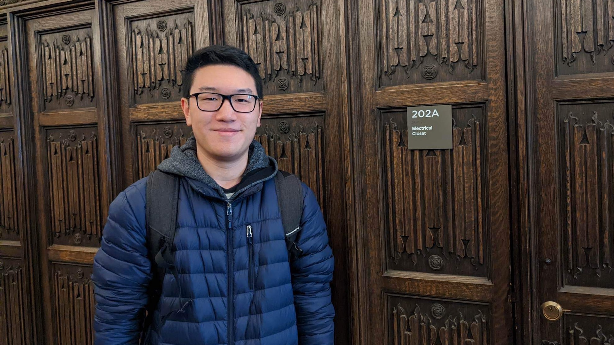
My research centers on developing algorithms and representations that make interactive computer graphics more efficient. Recently, my work has focused on how to render and stream 3D content when computation and bandwidth are limited, while keeping interaction responsive.
More broadly, I am interested in combining geometric and learning-based methods to represent, render, and reconstruct 3D scenes.
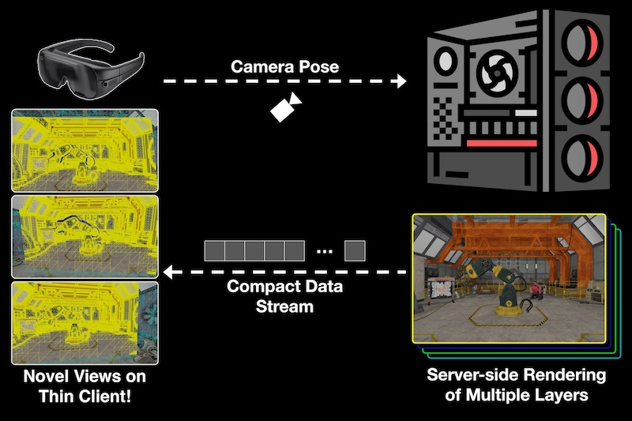
QUASAR: Quad-based Adaptive Streaming And Rendering
SIGGRAPH 2025: ACM Transactions on Graphics, 44(4)
QUASAR approximates 3D scenes with image-aligned quads. Its compact representation and temporal compression reduce streaming bandwidth while letting clients render new viewpoints locally.
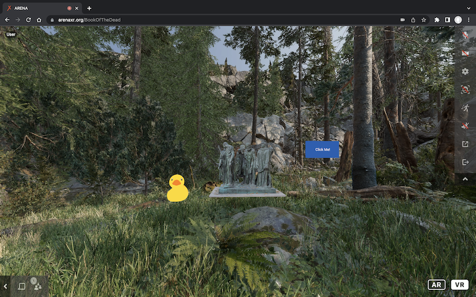
RenderFusion: Balancing Local and Remote Rendering for Interactive 3D Scenes
ISMAR 2023: IEEE International Symposium on Mixed and Augmented Reality
RenderFusion uses a perceptual model to assign scene objects to be rendered locally or remotely, balancing visual quality and interaction latency as workloads and network conditions change.
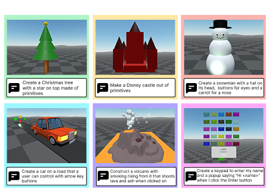
GenAssist: Interactive Prompt-Driven XR Program Generation
IEEE VR 2026: IEEE Conference on Virtual Reality and 3D User Interfaces
Webpage | Video | Code | Demo Abstract
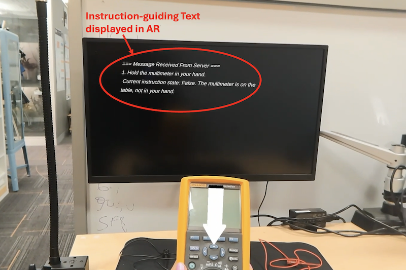
XaiR: An XR Platform that Integrates Large Language Models with the Physical World
ISMAR 2024: IEEE International Symposium on Mixed and Augmented Reality
Best Student Paper Award
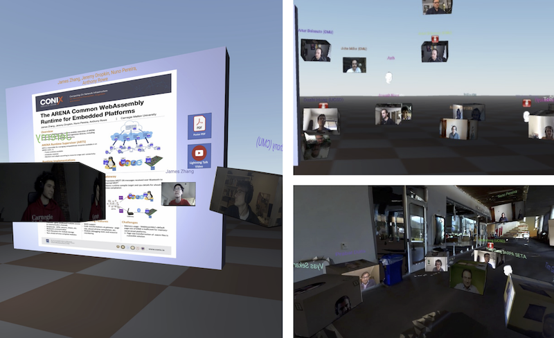
IEEE VR 2023: IEEE Conference on Virtual Reality and 3D User Interfaces
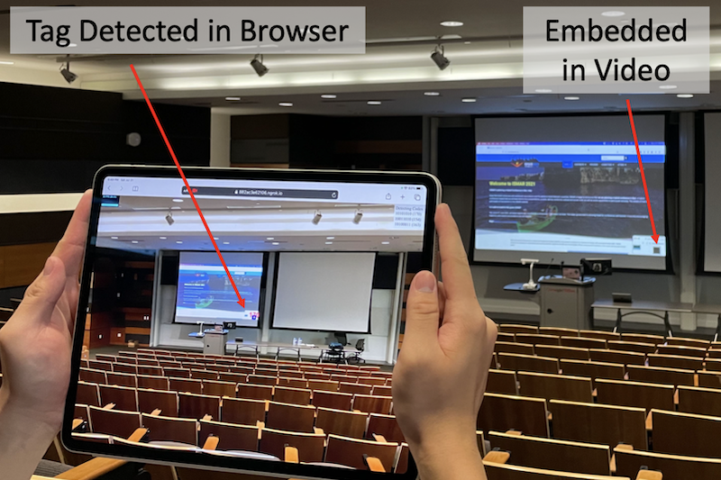
FLASH: Video-Embeddable AR Anchors for Live Events
ISMAR 2021: IEEE International Symposium on Mixed and Augmented Reality
FLASH combines blinking markers on video displays with a gravity-assisted pose solver to estimate camera pose for mobile AR.
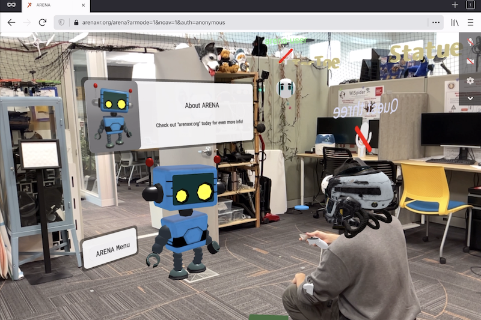
ARENA: The Augmented Reality Edge Networking Architecture
ISMAR 2021: IEEE International Symposium on Mixed and Augmented Reality
Nominated for Best Paper Award
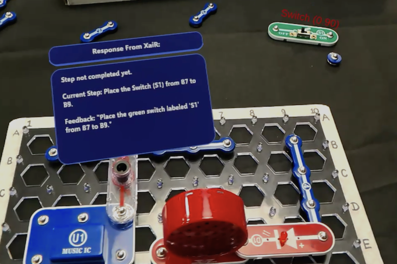
An XR Platform that Integrates Large Language Models with the Physical World
SenSys 2025: ACM Conference on Embedded Networked Sensor Systems
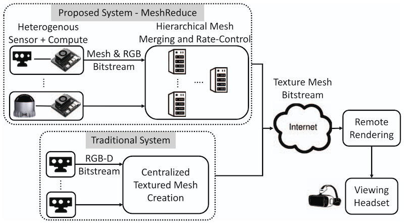
MeshReduce: Split Rendering of Live 3D Scene for Virtual Teleportation
IEEE VR 2024: IEEE Conference on Virtual Reality and 3D User Interfaces
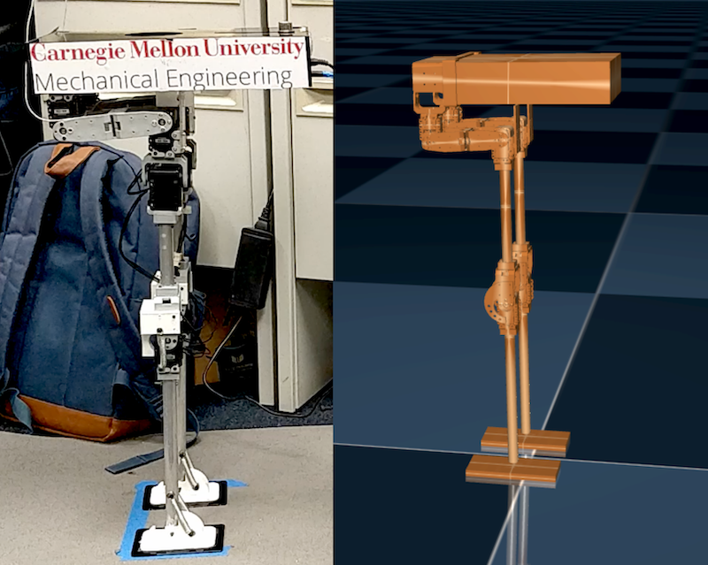
NSF Graduate Research Fellowship
2023 – 2028
Meta PhD Fellowship (Finalist)
2023
CMU University Honors
2022
ISMAR Best "Hybrid Conference of the Future"
Related article: Hybrid Conference Experiences in the ARENA
2021
Meta Reality Labs (Research Scientist Intern) — Display Systems Research Team
Working with Eric Penner and Todd Keeler
Summer 2026 – Present
Magic Leap (Research Intern) — Split Compute Team
Worked with Connor Smith and David Chu
Summer 2022
Robomechanics Lab (Undergraduate Research Assistant)
Worked with Aaron Johnson
Summer 2019 – Spring 2020
18-453: Introduction to XR Systems
Course content: 3D content capture, streaming, rendering, and display systems for AR/VR
Fall 2023 (TA), Fall 2025 (Lab Developer)
18-349: Introduction to Embedded Real-Time OS
Course content: ARM assembly, MMIO, GPIO, interrupts, timers, RTOS, PID control
Spring 2023 (TA), Spring 2024 (Lab Developer)
Reviewer
IEEE VR 2027, Eurographics 2027, VRST 2026, ISMAR 2026, VRST 2025, ISMAR 2025, IEEE VR 2025
Faculty Search Student Council Co-Chair
CMU ECE Department, 2025